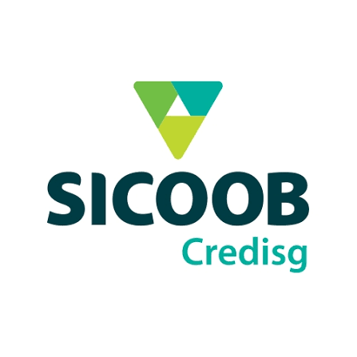
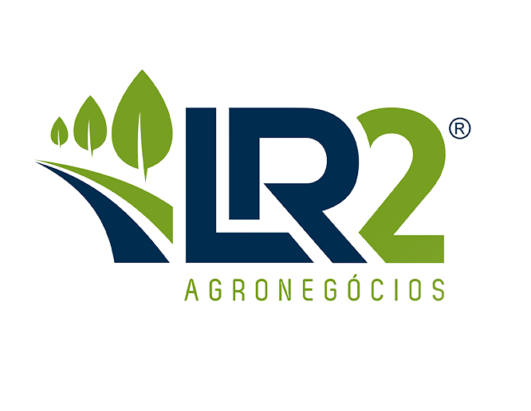
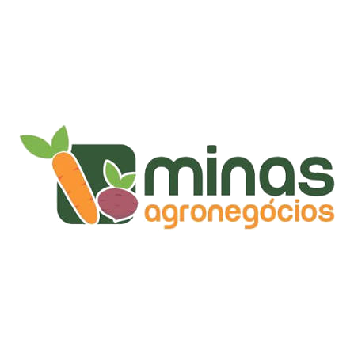
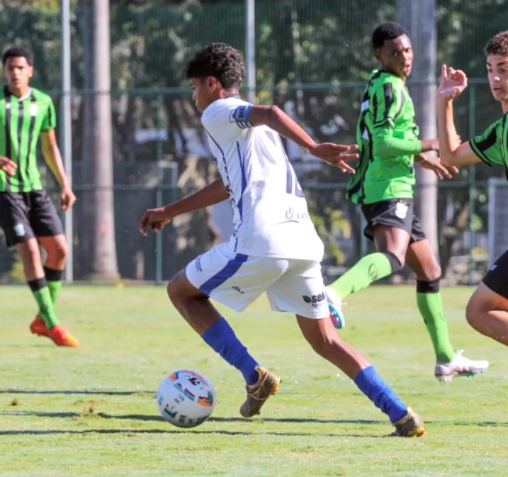

São Gotardo é agro.
O Inter SG é o clube do agro.
Aqui o campo não é metáfora. A cidade nasceu do PADAP, foi construída por famílias de produtores e hoje é um dos polos de hortifrúti mais importantes do país. É esse público que enche a arquibancada — e é essa marca que a camisa carrega.
Cinco marcas do agro e do cooperativismo já vestem o Inter SG: Sicoob Credisg, Shimada, LR2, Sekita e Minas Agronegócios. Patrocinar o clube é falar com o produtor, com o cooperado — e com o filho dele, que joga aqui.





Onde sua marca aparece.
Cada centímetro do uniforme é mídia em movimento — exposição em jogos, transmissões, redes e eventos. Conheça as posições disponíveis e seu nível de destaque.
 01
02
03
04
05
06
01
02
03
04
05
06
Você entra em boa companhia.
Sete marcas já escolheram o Inter SG. Seis delas são do agro ou do cooperativismo — as mesmas que disputam a atenção do produtor da região.


Sicoob Credisg.
Cooperativa de crédito.
Parceira do Inter SG.
Shimada Agronegócios.
Agronegócio.
Parceira do Inter SG.
Coopadap.
Cooperativa do Alto Paranaíba.
Parceira do Inter SG.